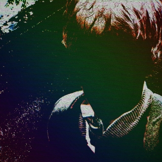

Skills
- Logical thinking and problem-solving skills, work discipline
- Project and time management, people skills, advanced english
- Proficiency in multiple programming languages: C++, Python, Haskell
- Knowledge of software design patterns
- Web development: HTML, CSS, JavaScript, Django
- Understanding of database concepts:
- Graphic design, vector drawing: Inkscape, CorelDRAW, Paint.NET
- Mobile application development: Android Studio & Kotlin
- Game development: Godot Engine & GodotScript
- Game design: world building, story telling, music composition and sound effects
- Experience with Git version control
- Willingness to learn more
Education
- University of Rijeka, Faculty of Informatics and Digital Technologies
(bachelor's degree in computer science) - Gymnasium of Andrija Mohorovičić
- Elementary School "Brajda"
Biography
- Birth place: Dubrovnik, Croatia
- Dwelling place: Rijeka, Croatia